2019年北京市中考物理试题 原卷解析
2019北京高级中等学校招生考试物理
一、单项选择题（下列各小题均有四个选项，其中只有一个选项符合题意，共30分，每小题2分）
1．（2分）通常情况下，下列物质属于导体的是（ ）
A．橡胶B．玻璃C．塑料D．金属
【分析】容易导电的物体是导体；如金属，大地等，不容易导电的物体是绝缘体，如玻璃，煤油等。导体和绝缘体没有绝对的界限。
【解答】解：橡胶、玻璃、塑料都不容易导电，属于绝缘体；
金属容易导电，属于导体。
故选：D。
【点评】导体和绝缘体不能死记硬背，根据生活中用哪些材料来导电，用哪些材料来绝缘，记忆效果好，并且记忆长久。
2．（2分）下列用电器中，利用电流热效应工作的是（ ）
A．计算器B．电热水壶C．收音机D．电冰箱
【分析】（1）电流的热效应：电流通过导体要发热，这叫做电流的热效应，如电灯、电炉、电烙铁、电焊等都是电流的热效应的例子；
（2）电流的化学效应：电流通过导电的液体会使液体发生化学变化，产生新的物质，电流的这种效果叫做电流的化学效应，如电解，电镀，电离等就属于电流的化学效应的例子；
（3）电流的磁效应：给绕在软铁芯周围的导体通电，软铁芯就产生磁性，这种现象就是电流的磁效应，如电铃、蜂鸣器、电磁扬声器等都是利用电流的磁效应制成的。
【解答】解：
A、计算器工作时主要是把电能转化为声能和光能，不是利用电流的热效应工作的，故A错误。
B、电热水壶工作时主要是把电能转化为内能，是利用电流的热效应工作的，故B正确。
C、计算器工作时主要是把电能转化为声能，不是利用电流的热效应工作的，故C错误。
C、电冰箱工作时主要是把电能转化为机械能，不是利用电流的磁效应工作的，故D错误。
故选：B。
【点评】本题主要考查学生对电流的热效应，以及电能和其它形式能的相互转化，利用热效应工作的电器特点是把电能主要转化成内能，是一道基础题。
3．（2分）下列实例中，为了增大摩擦的是（ ）
A．旱冰鞋下装有滚轮
B．足球守门员戴有防滑手套
C．冰壶底面打磨得很光滑
D．给车轴加润滑油
【分析】（1）增大摩擦力的方法：在接触面粗糙程度一定时，通过增大压力来增大摩擦力；在压力一定时，通过增大接触面的粗糙程度来增大摩擦力。
（2）减小摩擦力的方法：在接触面粗糙程度一定时，通过减小压力来减小摩擦力；在压力一定时，通过减小接触面的粗糙程度来减小摩擦力；使接触面脱离；用滚动摩擦代替滑动摩擦。
【解答】解：
A、旱冰鞋上装了轮子，是用滚动代替滑动来减小摩擦，故A错误；
B、足球守门员戴有防滑手套，是通过增大接触面的粗糙程度来增大摩擦力，故B正确；
C、冰壶底面打磨得很光滑，这是通过减小接触面的粗糙程度来减小摩擦；故C错误。
D、给车轴加润滑油，是通过减小接触面的粗糙程度来减小摩擦力；故D错误；
故选：B。
【点评】本题在考查影响滑动摩擦力大小的两个因素的同时，也考查了学生运用所学知识分析实际问题的能力，要求学生在生活中多注意观察，并学会应用。
4．（2分）关于家庭电路和安全用电，下列说法中正确的是（ ）
A．在未断开电源的情况下更换灯泡
B．我国家庭电路的电压为36V
C．在触电事故现场，要立即切断电源
D．用潮湿的手拨动电器设备的开关
【分析】（1）在更换灯泡时，应先断开开关；
（2）我国家庭电路电压是220V，人体安全电压不高于36V；
（3）一旦有人触电，应立即切断电源或用绝缘棒将导线挑开，使接触者尽快脱离电源；
（4）水是导体。
【解答】解：A、在未断开电源开关的情况下更换灯泡，灯泡处仍带电，容易发生触电事故，故A错误；
B、我国家庭电路电压是220V．故B错误；
C、发现有人触电时，千万不能用手将触电人拉开，这样救人者也会触电，应立即切断电源或用绝缘棒将导线挑开，使接触者尽快脱离电源，故C正确；
D、水是导体，用潮湿的手拨动电器设备的开关，易发生触电事故，故D错误。
故选：C。
【点评】本题考查的是日常生活中的一些安全用电常识。只要同学们牢记安全用电常识，并正确规范操作，就不会有危险发生。
5．（2分）如图所示的用具中，在使用时属于费力杠杆的是（ ）
A．筷子B．瓶盖起子
C．撬棒D．核桃夹
【分析】结合图片和生活经验，判断杠杆在使用过程中，动力臂和阻力臂的大小关系，再判断它是属于哪种类型的杠杆。
【解答】解：
A、筷子在使用过程中，动力臂小于阻力臂，是费力杠杆；
B、瓶盖起子在使用过程中，动力臂大于阻力臂，是省力杠杆；
C、撬棒在使用过程中，动力臂大于阻力臂，是省力杠杆；
D、核桃夹在使用过程中，动力臂大于阻力臂，是省力杠杆。
故选：A。
【点评】此题考查的是杠杆的分类，主要包括以下几种：①省力杠杆，动力臂大于阻力臂；②费力杠杆，动力臂小于阻力臂；③等臂杠杆，动力臂等于阻力臂。
6．（2分）如图所示，把正在响铃的闹钟放在玻璃罩内，逐渐抽出玻璃罩内的空气，听到闹铃声逐渐变小，直至听不见；再让空气逐渐进入玻璃罩内，听到闹铃声又逐渐变大。关于上述实验，下列说法中正确的是（ ）
A．空气可以传播声音
B．只要闹铃振动，就可以听到铃声
C．听不见闹铃声了，是由于闹铃不再振动
D．听到闹铃声又逐渐变大，是由于闹铃振动逐渐变剧烈了
【分析】解决此题要知道声音需要介质进行传播，声音可以在固体、液体和气体中传播，但不能在真空中传播。
【解答】解：把正在发声的闹钟放在玻璃罩内，逐渐抽出罩内的空气，闹钟的声音会逐渐变小；当把空气全部抽空后听不到声音，再让空气逐渐进入玻璃罩，闹钟的声音会逐渐变大。说明在真空中不能传播声音，声音必须通过介质才能传播。
故选：A。
【点评】解决此类问题要结合声音的传播条件进行解答。
7．（2分）2019年1月3日，“玉兔二号”从停稳在月球表面的“嫦娥四号”上沿轨道缓缓下行，到达月球表面，如图所示。关于“玉兔二号”下行的过程，下到说中正确的是（ ）
A．若以月球表面为参照物，“嫦娥四号”是运动的
B．若以月球表面为参照物，“玉兔二号“是静止的
C．若以轨道为参照物，“玉兔二号“是运动的
D．若以“嫦娥四号“为参照物，“玉兔二号”是静止的
【分析】在研究物体运动时，要选择参照的标准，即参照物，物体的位置相对于参照物发生变化，则运动，不发生变化，则静止。
【解答】解：
A、“嫦娥四号”停稳在月球表面上，若以月球表面为参照物，“嫦娥四号”相对于月球表面之间没有位置变化，是静止的。故A错误。
B、“玉兔二号”下行的过程中，若以月球表面为参照物，“玉兔二号”相对于月球表面之间发生了位置变化，是运动的。故B错误；
C、若以轨道为参照物，“玉兔二号”相对于轨道上的某个点之间的位置不断发生变化，是运动的。故C正确；
D、若以“嫦娥四号”为参照物，“玉兔二号”相对于“嫦娥四号”之间的位置不断发生变化，是运动的。故D错误。
故选：C。
【点评】此题主要考查了运动和静止的相对性，在判断物体运动和静止时，关键看物体相对于参照物的位置是否发生了变化。
8．（2分）如图为一名举重运动员做挺举连续动作时的几个状态图。下列说法中正确的是（ ）
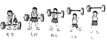
A．从发力到上拉的过程中，运动员对杠铃不做功
B．从上拉到翻站的过程中，运动员对杠铃不做功
C．从翻站到上挺的过程中，运动员对杠铃不做功
D．举着杠铃稳定站立的过程中，运动员对杠铃不做功
【分析】做功的两个必要因素：作用在物体上的力；物体在力的方向上通过的距离。二者缺一不可。
【解答】解：
A、从发力到上拉的过程中，运动员对杠铃施加一个向上的力，杠铃向上移动了距离，所以人对杠铃做了功，故A错；
B、从上拉到翻站的过程中，运动员对杠铃施加一个向上的力，杠铃向上移动了距离，所以人对杠铃做了功，故B错；
C、从翻站到上挺的过程中，运动员对杠铃施加一个向上的力，杠铃向上移动了距离，所以人对杠铃做了功，故C错；
D、举着杠铃稳定站立的过程中，运动员施加了力，但杠铃没移动距离，所以人对杠铃不做功，故D正确。
故选：D。
【点评】掌握做功的两个必要因素，有力有距离不一定做功，力对物体做功，一定是在该力的方向上移动了距离。
9．（2分）古诗《立冬》中，有诗句“门尽冷霜能醒骨，窗临残照好读书”，诗中所说的“霜”，其形成过程的物态变化属于（ ）
A．凝华B．凝固C．汽化D．液化
【分析】物质由固态变为液态的过程是熔化；物质由液态变为固态的过程是凝固；物质由液态变为气态的过程是汽化；
物质由气态变为液态的过程是液化；物质由固态直接变为气态的过程是升华；物质由气态直接变为固态的过程是凝华。
【解答】解：
霜是固态小冰晶，是空气中的水蒸气遇冷形成的，是凝华现象。
故选：A。
【点评】掌握六种物态变化，以及物态变化的吸热和放热情况，会用物态变化解释生活中的问题，这是一道考查基础知识的题目，难度不大。
10．（2分）如图所示的电路中，将开关S闭合，灯L1和灯L2均发光，下列说法中正确的是（ ）
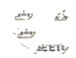
A．灯L1和灯L2串联
B．灯L1和灯L2两端的电压一定相等
C．通过灯L1的电流与通过灯L2的电流一定相等
D．通过灯L1的电流与通过电源的电流一定相等
【分析】（1）在串联电路中电流只有一条路径，各用电器之间相互影响；在并联电路中电流有多条流通路径，各个用电器之间互不影响，独立工作。
（2）并联电路中，各支路两端的电压相等。由图可知，两灯泡并联，根据并联电路中电压和电流的规律进行判断。
【解答】解：
A、开关闭合后，电路中有两条并列的电流路径，所以灯L1和灯L2并联，故A错误；
B、两灯并联，由并联电路的电压特点可知，两灯两端的电压一定相等，故B正确；
C、当两灯泡的规格不相同时，通过灯L1和灯L2的电流一定不相等，当两灯泡的规格相同时，通过灯L1和灯L2的电流一定相等，故C错误；
D、通过电源的电流是干路电流，由于干路电流等于各支路电流之和，所以通过灯L1的电流一定小于通过电源的电流，故D错误。
故选：B。
【点评】此题主要考查的是串并联的识别和并联电路中的电压、电流特点等知识，基础性题目，难度不大。
11．（2分）如图所示的电路中，电源两端电压保持不变，当开关S闭合时，灯L正常发光。如果将滑动变阻器的滑片P向右滑动，则下列说法中正确的是（ ）
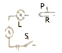
A．电流表的示数变大，灯L变亮
B．电流表的示数变大，灯L变暗
C．电流表的示数变小，灯L变亮
D．电流表的示数变小，灯L变暗
【分析】由电路图可知，灯泡和滑动变阻器串联，电流表测量电路中的电流；
根据滑片的移动判断接入电路电阻的变化和电路总电阻的变化，根据欧姆定律可知电路中电流的变化和灯泡两端电压的变化，根据P＝I2R可知灯泡实际功率的变化和灯泡亮暗的变化。
【解答】解：由电路图可知，灯泡和滑动变阻器串联，电流表测量电路中的电流；
将滑动变阻器的滑片P向右滑动时，接入电路的电阻变大，电路的总电阻变大；
根据I＝可知，电路中的电流变小，即电流表的示数变小；
根据U＝IR可知，灯泡两端的电压变小，由P＝UI可知，灯泡的实际功率变小，故灯泡变暗。
故选：D。
【点评】本题考查了串联电路的特点和欧姆定律、电功率的应用，关键是会判断滑片移动时电路电阻的变化和知道灯泡的亮暗取决于实际功率的大小。
12．（2分）如图所示，两手的食指分别用沿水平方向的力顶在削好的铅笔两端，使铅笔保持水平静止。下列说法中正确的是（ ）
A．铅笔对左侧食指的压力较大
B．铅笔对右侧食指的压力较大
C．铅笔对右侧食指的压强较大
D．铅笔对两侧食指的压强大小相等
【分析】（1）从铅笔所处的平衡状态入手，分析两手指的受力大小关系。手指所受铅笔的压力等于手指对铅笔的压力，这是作用力与反作用力。
（2）压强的大小由压力的大小和受力面积的大小来确定。在压力相同的情况下，只需比较受力面积的大小即可。
【解答】解：
AB、铅笔处于静止状态，受到两手指的压力是一对平衡力，所以两手指对铅笔的压力相等；由于手指对铅笔的压力与铅笔对手的压力使一对作用力与反作用力，所以这两力也相等。由此可知：两手指受到的铅笔的压力相同，故AB错误；
CD、由于铅笔的两端的受力相同，右边的受力面积小，由p＝可知右边手指受到的压强较大，故C正确，D错误。
故选：C。
【点评】本题考查了学生对压强公式的掌握和运用，分析时要用好控制变量法。
13．（2分）如图所示，在试管内装适量水，用橡胶塞塞住管口，将水加热至沸腾一段时间后，橡胶塞被推出，管口出现大量“白气”。此实验中，主要是通过做功改变物体内能的过程是（ ）
A．试管变热的过程
B．水变热的过程
C．水变成水蒸气的过程
D．水蒸气推出橡胶塞的同时变成“白气”的过程
【分析】改变物体内能的方法：一是做功（能量转化），二是热传递（能量转移），两种方法对于改变物体内能来说是等效的。
【解答】解：
A、试管变热，是试管从火吸收热量，内能增加，是通过热传递改变物体的内能，故A错；
B、水变热，是水吸收热量、内能增大，是通过热传递改变物体的内能，故B错；
C、水吸热，温度升高，汽化成水蒸气，是通过热传递改变物体的内能，故C错；
D、水蒸气推出橡胶塞的同时变成“白气”的过程，是水蒸气膨胀做功，将水蒸气的内能转化为橡胶塞的机械能，是通过做功改变物体的内能。
故选：D。
【点评】本题结合橡皮塞冲出的实验考查了能量转化关系，属于基础题目。
14．（2分）如图所示，装有水的容器静止放在水平桌面上，正方体物块M悬浮在水中，其上表面与水面平行，则下列说法中正确的是（ ）
A．M上、下表面受到水压力的合力大于M受到的浮力
B．M上、下表面受到水压力的合力大小等于M受到的重力大小
C．M上表面受到水的压力大于M下表面受到水的压力
D．M上表面受到水的压力和M下表面受到水的压力是一对平衡力
【分析】根据物体浮沉条件：浸没水中的物体，F浮＞G，上浮（最后漂浮：F浮′＝G）；F浮＜G，下沉；F浮＝G，悬浮；
结合浮力产生的原因：上下表面受到的压力差分析解答。
【解答】解：
AB、正方体物块M悬浮在水中，则F浮＝G，
其上表面与水面平行，根据浮力产生的原因可知，M上、下表面受到水压力的合力大小F合＝F浮，
所以F合＝F下﹣F上＝F浮＝G，故A错误，B正确；
CD、由图知，M上表面所处的深度较小，根据p＝ρgh可知，M上表面受到水的压强小于M下表面受到水的压强，而上下表面的面积相同，则由F＝pS可知，上表面受到水的压力小于M下表面受到水的压力，所以，M上表面受到水的压力和M下表面受到水的压力不是一对平衡力，故CD错误；
故选：B。
【点评】本题考查了学生对平衡力的辨别和物体浮沉条件的掌握和运用。
15．（2分）两个完全相同的圆柱形容器静止放在水平桌面上，其中分别装有质量相等的水和酒精，液面高度如图所示。甲容器中液体对容器底部的压强和压力分别为p1和F1，乙容器中液体对容器底部的压强和压力分别为p2和F2；甲容器对桌面的压强和压力分别为p1′和F1’，乙容器对桌面的压强和压力分别为p2′和F2′，已知水的密度大于酒精的密度，则下列判断中正确的是（ ）
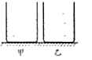
A．p1＜p2、F1＜F2B．p1＜p2、F1＝F2
C．p1'＝p2′、F1′＝F2′D．p1’＞p2′，F1′＞F2′
【分析】（1）液柱对容器底的压力等于液柱的重力，根据G＝mg，分析F1与F2大小关系；
由液柱的受力面积S相同，根据p＝分析液柱对容器底的压强大小关系；
（2）容器对水平桌面的压力等于容器和液体的重力，根据已知条件比较两容器对桌面的压力的关系，根据p＝分析两容器对桌面的压强大小关系。
【解答】解：（1）分别装有质量相等的水和酒精，液柱对容器底的压力等于液柱的重力，根据G＝mg，因质量相同，故F1＝F2；
因两个完全相同的圆柱形容器，故液柱的受力面积S相同，根据p＝，液柱对容器底的压强：
p1＝p2；
（2）容器对水平桌面的压力等于容器和液体的重力，
故两容器对桌面的压力相等，F1′＝F2′
根据p＝，两容器对桌面的压强相等，p1′＝p2′；只有C正确。
故选：C。
【点评】本题考查液体产生压力和压强及固体产生压力和压强大小的比较。液柱对容器底的压力等于液柱的重力。
二、多顶选择题（下列各小题均有四个选项，其中符合题意的选项均多于一个。共10分，每小题2分．每小题选项全选对的得2分，选对但不全的得1分，有错选的不得分）
16．（2分）下列说法中正确的是（ ）
A．一杯水和半杯水的比热容相等
B．0℃的水没有内能
C．液体在任何温度下都能蒸发
D．固体分子之间只存在引力
【分析】（1）比热容是物质的一种特性，其大小与物质的种类和状态有关；
（2）物体内所有分子由于热运动具有的动能和分子势能的总和叫内能，任何物体都有内能；
（3）根据蒸发的定义分析解答；
（4）分子之间既存在引力又存在斥力。
【解答】解：
A、比热容是物质的一种特性，其大小与物质的种类和状态有关，与质量无关；一杯水和半杯水的相比，物质的种类和状态不变，其比热容相等，故A正确；
B、因分子在永不停息地做无规则运动，所以一切物体都具有内能，故B错误；
C、蒸发是在任何温度下，在液体表面发生的缓慢的汽化现象，即液体在任何温度下都能蒸发，故C正确；
D、分子之间既存在引力又存在斥力，故D错误。
故选：AC。
【点评】本题考查了学生对内能、比热容、蒸发以及分子间的作用力等知识的了解与掌握，这是学生学习过程中的难点、易错点。
17．（2分）如图所示，小朋友沿滑梯下滑得越来越快。关于该过程，下列说法中正确的是（ ）
A．小朋友不具有惯性B．小朋友的运动状态不变
C．小朋友的动能增加D．小朋友的重力势能减少
【分析】任何物体都有惯性；物体运动状态的改变包括速度大小和速度方向发生了变化；动能的影响因素为速度和质量；重力势能的影响因素为高度和质量。
【解答】解：
A．任何物体在任何时候都具有惯性，所以小朋友也具有惯性，故A错误。
B．物体运动状态的改变包括速度大小和速度方向发生了变化，小朋友沿滑梯下滑得越来越快，速度变大，所以运动状态也在改变，故B错误。
C．动能的影响因素为速度和质量，小朋友沿滑梯下滑得越来越快，速度在变大，所以动能在增加，故C正确。
D．重力势能的影响因素为高度和质量，小朋友由滑梯顶端往下滑，高度在减小，所以重力势能在减少，故D正确。
故选：CD。
【点评】本题综合考察惯性，运动状态，动能和重力势能等方面，考察学生的综合掌握能力。
18．（2分）某同学研究电流产生的磁场，闭合开关前，小磁针的指向如图甲所示；闭合开关，小磁针的偏转情况如图乙中箭头所示；只改变电流方向，再次进行实验，小磁针的偏转情况如图丙中箭头所示。下列结论中合理的是（ ）
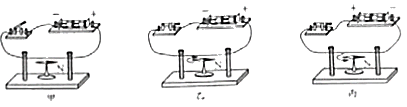
A．由甲、乙两图可得电流可以产生磁场
B．由甲、乙两图可得电流产生的磁场的方向与电流方向有关
C．由乙、丙两图可得电流产生的磁场的强弱与电流大小有关
D．由乙、丙两图可得电流产生的磁场的方向与电流方向有关
【分析】要掌握电流的磁效应，知道电流周围存在磁场，磁场方向与电流方向有关。
【解答】解：
A、当小磁针受到地磁场的作用时，一端指南一端指北如图甲，当导线中电流向左时，小磁针的N极向纸外偏转如图乙，所以，甲乙两图可说明电流周围存在磁场，故说法正确。
B、甲乙只能说明通电导体周围存在磁场，没有改变导体中的电流方向，不能说明电流产生的磁场跟电流方向有关。故说法错误。
C、乙丙只是改变了电流方向，没有改变电流大小，不能说明磁场强弱跟电流大小有关。故说法错误。
D、当导线中电流向左时，小磁针的N极向纸外偏转如图乙，当导线中电流向右时，小磁针的N极向纸里偏转如图丙，所以，说明电流周围的磁场跟电流方向有关。故说法正确。
故选：AD。
【点评】此题主要考查了奥斯特实验的现象及结论，一定要掌握电流的磁效应。同时考查了学生利用所学知识解决问题的能力。
19．（2分）下列说法中正确的是（ ）
A．风力发电机可以将机械能转化为电能
B．太阳能电池可以将太阳能转化为电能
C．电暖气正常工作时，主要是将电能转化为机械能
D．电风扇正常工作时，主要是将电能转化为机械能
【分析】判断能量的转化，我们主要看它要消耗什么能量，得到什么能量，总是消耗的能量转化为得到的能量。
【解答】解：A、风力发电机是利用电磁感应现象工作的，工作时将机械能转化为电能，故A正确；
B、使用太阳能电池的目的是将太阳能转化为电能，储存起来再加以利用，故B正确；
C、电暖气是利用电流的热效应工作的，是将电能转化为内能，故C错误；
D、电风扇工作时，主要是将电能转化为机械能，使风扇转动，故D正确。
故选：ABD。
【点评】能量转化的过程都是有规律可循的，在平常的学习中要注意总结归纳。
20．（2分）某同学用滑轮组提升物体，绳子自由端竖直移动的距离随时间变化的关系如图中图线a所示，物体上升的高度随时间变化的关系如图中图线b所示。已知物体的质量为450g，所用动滑轮的质量为50g，绳子自由端的拉力F为1.3N，g取10N/kg。在0～2s的过程中，下列说法中正确的是（ ）
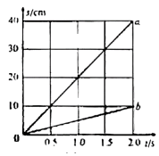
A．绳子自由端移动的速度为5.0cm/s
B．拉力F的功率为0.26W
C．有用功为0.45J
D．滑轮组的机械效率为90%
【分析】（1）根据v＝可求速度；
（2）根据P＝Fv可求拉力F的功率；
（3）有用功W有用＝Gh；
（4）由图线ab所示分析可得，s＝nh可知n的示数，滑轮组的机械效率为η＝＝
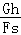
＝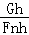
＝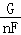
可求。【解答】解：A、绳子自由端竖直移动的距离随时间变化的关系如图中图线a所示，绳子自由端移动的速度为：v＝＝
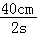
＝20cm/s，故A错误；B、拉力F的功率：P＝Fv＝1.3N×0.2m/s＝0.26W，故B正确；
C、有用功：W有用＝Gh＝mgh＝0.45kg×10N/kg×0.1m＝0.45J，故C正确；
D、由图线ab所示分析可得，s＝nh可得n＝
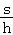
＝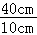
＝4，滑轮组的机械效率为：
η＝＝
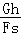
＝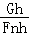
＝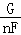
＝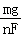
＝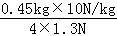
×100%＝86.5%，故D错误，故选：BC。
【点评】本题主要考查滑轮组公式的应用，是一道综合题。
三、实验解答题（共39分，21、27、28题各4分，22-26题5分，30、31题各6分）
21．（2分）如图所示，电阻箱的示数为 2035 Ω。
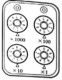
【分析】用各指针所指的示数乘以下面的倍数，然后将所有的数值相加，即为该电阻箱的读数。
【解答】解：由图知，该电阻箱的示数为：2×1000Ω+0×100Ω+3×10Ω+5×1Ω＝2035Ω。
故答案为：2035。
【点评】在计算电阻箱的读数时不要忘记乘以各指针所对应的倍数。
22．（2分）如图所示，电流表的读数为 0.5 A。
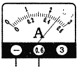
【分析】电流表的读数：确定使用的量程，确定每一个大格和每一个小格各代表多少。
【解答】解：电流表使用的0～0.6A量程，每一个大格代表0.2A，每一个小格代表0.02A，电流为0.5A。
故答案为：0.5。
【点评】掌握电流表的正确使用和正确读数。
23．（2分）在条形磁铁四周放置的小磁针静止时的指向如图所示，图中小磁针涂黑的一端为它的N极，由此可以判断出条形磁铁的A端是 N （选填“N”或“S”）极。
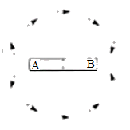
【分析】已知小磁针的指向，则根据磁极间的相互作用，可知A端的磁极。
【解答】解：由图知，左侧的小磁针静止时S极都指向A端，因同名磁极相互排斥，异名磁极相互吸引，故可知条形磁铁的A端为N极，B端为S极。
故答案为：N。
【点评】此题主要考查的是学生对磁极之间的作用规律的理解和应用，基础性题目。
24．（2分）如图所示，用毛皮摩擦过的橡胶棒接触验电器的金属球，就有一部分电荷转移到验电器的两片金属箔上，这两片金属箔带 同种 （选填“同种”或“异种”）电荷，由于互相 排斥 （选“吸引”或“排斥”）而张开。
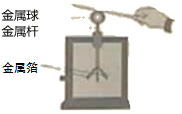
【分析】验电器是检验物体是否带电的仪器，其制作原理是：同种电荷相互排斥。
【解答】解：
用毛皮摩擦过的橡胶棒带负电（有多余的电子），用它去接触验电器的金属球时，橡胶棒上多余的电子会转移到验电器上，则验电器也带上负电，即验电器的金属球和两个金属箔片上都带上了同种电荷﹣﹣﹣负电荷；由于同种电荷相互排斥，所以其两个金属箔片会张开；
故答案为：同种；排斥。
【点评】知道实验室中如何取得正电荷和负电荷，且明白验电器的制作原理是解决该题的关键。
25．（2分）如图所示，两个相同瓶子的瓶口相对，之间用一块玻璃板隔开，上面的瓶中装有空气，下面的瓶中装有密度比空气大的红棕色二氧化氮气体。抽掉玻璃板后，可以看到，两个瓶中的气体会混合在一起，最后颜色变得均匀，这属于 扩散 现象。
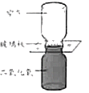
【分析】分子在永不停息地做无规则运动的现象属于扩散现象，分子的运动速度和温度有关，温度越高分子的运动速度越快，即扩散越快。
【解答】解：抽掉玻璃板后，可看到两种气体逐渐混合在一起，颜色变得均匀，这是分子运动的结果，是扩散现象。
故答案为：扩散。
【点评】本题主要考查学生对扩散概念的理解和应用，是中招热点。
26．（2分）如图所示，杠杆水平平衡。杠杆可在竖直平面内绕固定点O自由转动，其上相邻刻线间的距离相等。若在杠杆上A点挂2个重均为0.5N的钩码，在B点挂4个重均为0.5N的钩码，杠杆 不能 （选填“能”或“不能”）保持水平平衡。
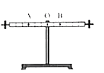
【分析】由图可知杠杆上A、B两点的力臂关系，比较A、B两点重力和力臂的乘积关系，若二者相等则杠杆平衡，否则不平衡。
【解答】解：由题意可知，杠杆上A点钩码的总重GA＝2×0.5N＝1N，B点钩码的总重GB＝4×0.5N＝2N，
设杠杆相邻刻线间的距离为L，则LA＝3L，LB＝2L，
则杠杆两侧力与力臂的乘积分别为：GALA＝1N×3L，GBLB＝2N×2L，
所以GALA≠GBLB，则杠杆不能保持水平平衡。
故答案为：不能。
【点评】本题考查了杠杆平衡的判断，要注意杠杆是否平衡取决于力和力臂的乘积是否相等。
27．（2分）某同学利用图所示的装置及相同高度的蜡烛等器材进行实验探究，其中平板透明玻璃与水平纸面垂直。将同一支蜡烛先后放置在白纸上与玻璃距离不同的A、B两点，观测每次蜡烛所成像的高度。该同学探究的问题是：物体通过平面镜所成像的高度与 物体到平面镜距离 是否有关。
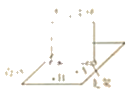
【分析】平面镜成像特点：物体在平面镜中成虚像，物像大小相等，物像连线与镜面垂直，物像到平面镜的距离相等。
【解答】解：该同学改变蜡烛到平面镜的距离，观察每次像的高度，探究的是平面镜成像高度与物体到平面镜距离的关系。
故答案为：物体到平面镜距离。
【点评】探究某一物理量与哪些因素有关时，探究活动中的变量即影响因素。
28．（4分）在研究某物质熔化过程中温度的变化规律时，持续加热该物质，记录并描绘出了该物质温度随时间变化的图线，如图所示。根据图象可知该物质是 晶体 （选填“晶体”或“非晶体”），判断依据是 有熔点 。
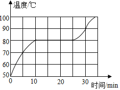
【分析】晶体和非晶体在熔化过程中的区别：晶体在熔化过程中，温度不变；非晶体在熔化过程中温度不断上升，晶体熔化时的温度为熔点。
【解答】解：由图知，该物质在熔化过程中，温度保持80℃不变，所以该物质为晶体。并且熔点为80℃。
故答案为：晶体；有熔点。
【点评】根据图象是否有不变的温度判断是晶体还是非晶体，要学会从图象中找出与晶体有关的信息，解题的关键是理解图象中每一阶段表示的含义及物质的状态。
29．（4分）某同学为了测出木块A在水平桌面上运动的过程中所受滑动摩擦力的大小，采用了如图所示的实验装置。
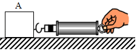
（1）他用弹簧测力计水平拉动木块A，应使木块A沿水平桌面做 匀速 直线运动。
（2）请你画出（1）中木块A的受力示意图，并分析说明这种运动状态下，弹簧测力计的示数能表示木块A所受滑动摩擦力大小的依据。
【分析】（1）利用二力平衡条件；
（2）将木块A放在水平木板上，用弹簧测力计沿水平方向拉动，使木块做匀速直线运动，此时木块受到的滑动摩擦力大小等于弹簧测力计的示数，其原理是二力平衡；
【解答】解：
（1）用弹簧测力计水平拉动木块A，应使木块A沿水平桌面做匀速直线运动，这样做的目的是便于测出木块所受滑动摩擦力的大小；
（2）木块A沿水平桌面做匀速直线运动，木块A在水平方向上受拉力F和滑动摩擦力f，在竖直方向上受重力G和支持力F支，受力示意图如下图所示。
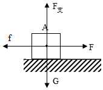
由于木块A做匀速直线运动，处于平衡状态，拉力和滑动摩擦力为一对平衡力，所以f＝F，则弹簧测力计的示数能表示木块A所受滑动摩擦力大小。
故答案为：（1）匀速；
（2）见上图； 由于木块A做匀速直线运动，处于平衡状态，拉力和滑动摩擦力为一对平衡力，所以f＝F，则弹簧测力计的示数能表示木块A所受滑动摩擦力大小。
【点评】此题探究摩擦力的大小与什么因素有关，掌握两个影响因素，并注意控制变量法的应用。
30．（5分）某同学要测量一卷粗细均匀的铜线的长度，已知铜线的横截面积S＝5×10﹣3cm2，铜的密度ρ＝8.9g/cm3，他的主要实验步骤如下：
①用天平测出这卷铜线的质量m。
②计算出这卷铜线的长度l。
请完成下列问题：
（1）画出本次实验数据的记录表格。
（2）测量铜线质量时，天平平衡后，右盘中砝码的质量和游码的位置如图所示，则该卷铜线的质量m＝ 178 g，铜线的长度1＝ 4×103 cm。
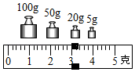
【分析】（1）根据实验步骤确定测量的物理量，然后设计记录表格。
（2）物体的质量等于砝码质量加上游码对应的示数；根据密度公式变形可求得其体积，已知铜线的横截面积，然后利用V＝Sl可求得卷铜线的长度。
【解答】解：（1）用天平测出这卷铜线的质量m，已知铜的密度，根据密度公式变形可求得其体积，已知铜线的横截面积，然后利用V＝Sl可求得卷铜线的长度l；故设计表格如下：
铜线的质量m/g | 铜线的体积V/cm3 | 铜线的长度l/cm |
（2）该卷铜线的质量m＝100g+50g+20g+5g+3g＝178g；
由ρ＝可得，该卷铜线的体积V＝＝
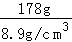
＝20cm3，铜线的长度1＝＝
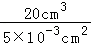
＝4×103cm。故答案为：（1）见上表；（2）178；4×103。
【点评】此题考查质量的测量和密度公式及其变形的应用，难度不是很大，但设计表格给此题增加了难度。
31．（6分）某同学在做光学实验时，他先将焦距为10cm的凸透镜A固定在光具座上50cm刻度线处，光屏和点燃的蜡烛分别位于凸透镜A两侧，蜡烛放置在20cm刻度线处，如图所示。左右移动光屏，直至光屏上呈现烛焰清晰的像。
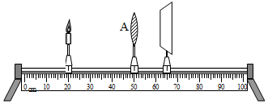
（1）上述光屏上所成的像是 缩小 （选填“放大”“等大”或“缩小”）的实像。
（2）将透镜B放在凸透镜A与光屏之间某处（图中未画出），光屏上原来清晰的像变模糊了，将光屏向远离凸透镜A的方向移动，光屏上又呈现烛焰清晰的像，这说明透镜B对光线有 发散 （选填”会聚”或“发散”）作用。透镜B能用来矫正 近视眼 （选填“近视眼”成“远视眼”）。
【分析】（1）要解决此题，需要掌握凸透镜成像的规律：物距小于焦距成正立放大虚像。应用是放大镜。
物距大于一倍焦距小于二倍焦距成倒立放大实像，像距大于二倍焦距。
物距等于二倍焦距成倒立等大实像，像距等于二倍焦距。
物距大于二倍焦距成倒立缩小实像，像距大于一倍焦距小于二倍焦距。
（2）凸透镜对光线有会聚作用，远视镜就是凸透镜，凹透镜对光线有发散作用，近视镜就是凹透镜；
【解答】解：（1）凸透镜A焦距10cm，固定在光具座上50cm刻度线处，蜡烛放置在20cm刻度线处，所以物距u＝30cm＞2f，物距大于二倍焦距成倒立缩小实像；
（2）将透镜B放在凸透镜A与光屏之间某处，光屏上原来清晰的像变模糊了，将光屏向远离凸透镜A的方向移动，光屏上又呈现烛焰清晰的像，这说明凸透镜B对光线具有发散作用，是凹透镜，透镜B能用来矫正近视眼；
故答案为：（1）缩小；（2）发散；近视眼。
【点评】本题考查凸透镜成像规律实验，关键是将课本知识内容记忆清楚，仔细分析即可。
32．（6分）某同学测量额定电压为2.5V的小灯泡L在不同电压下的电阻。
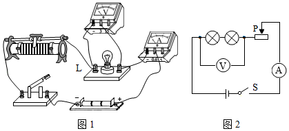
（1）他连接了如图1所示的实验电路，其中有一个元件与导线连接有误，这个元件是： 变阻器 。
（2）改正（1）中的错误后，闭合开关，调节滑动变阻器，进行多次测量，测量的数据如表所示。
电压U/V | 0.9 | 1.3 | 1.7 | 2.1 | 2.5 |
电流I/A | 0.18 | 0.22 | 0.24 | 0.26 | 0.28 |
请完成下列问题：
①小灯泡L正常发光时的电阻RL＝ 8.9 Ω．（结果保一位小数）
②若将与上述小灯泡L规格完全相同的两个小灯泡串联接入电路，如图2所示。闭合开关，调节滑动变阻器，使电压表的示数为1.8V，则电流表的示数为 0.18 A。
【分析】（1）变阻器应按一下一上接入电路中；
（2）①灯在额定电压下正常发光，由表中数据，根据欧姆定律求出小灯泡L正常发光时的电阻；
②若将与上述小灯泡L规格完全相同的两个小灯泡串联接入电路，因两灯的电阻相等，由分压强原理，每个灯的电压为由表中数据得出电流表的示数。
【解答】解：（1）变阻器应按一下一上接入电路中，原电路中将金属杆连入电路中是错误的；
（2）①灯在额定电压下正常发光，由表中数据，小灯泡L正常发光时的电阻：
RL＝＝
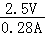
≈8.9Ω；②若将与上述小灯泡L规格完全相同的两个小灯泡串联接入电路，闭合开关，调节滑动变阻器，使电压表的示数为1.8V，因两灯的电阻相等，由分压强原理，每个灯的电压为：0.5×1.8V＝0.9V，由表中数据，电流表的示数为0.18A。
故答案为：（1）变阻器；（2）①8.9；②0.18。
【点评】本题测灯的电阻，考查变阻器的连接、电阻计算、串联电路的规律及欧姆定律的运用。
四、科营阅读题（共4分）
33．（4分）请阅读《郭守敬望远镜》并回答问题
郭守敬望远镜
“星汉灿烂，若出其里”。漫天星光绝大多数都来自宇宙中的恒星。怎样知道这些遥远且炽热的恒星的成分呢？用光谱!我们知道，阳光通过三棱镜后会发生色散，形成一条按照一定顺序排列的彩色光带，我们称之为光谱。太阳是恒星，因此太阳的光谱是一种恒星光谱。恒星光谱包含了恒星的很多“户口”信息，比如化学成分、密度、气压、温度、恒星年龄等。恒星光谱除了包含恒星自身的信息之外，还能告诉我们恒星以及它所在的星系是在远离，还是在靠近我们，甚至还能告诉我们远离或靠近的速度有多大。观测表明，恒星或星系远离我们的速度与它跟我们之间的距离成正比，根据恒星或星系远离我们的速度可以知道这个恒星或星系距离我们有多远。
光谱望远镜是获取恒星光谱的有力工具。目前世界上最好的光谱望远镜是由中国天文学家自主研制的，以元代著名天文学家、数学家、水利工程专家郭守敬名字命名的“郭守敬望远镜”，如图所示，它可以将接收到的恒星的光会聚后通过色散系统形成恒星光谱，进而获取恒星的信息。它能够同时观测4000个天体，是当今世界上光谱获取效率最高的望远镜。在刚刚过去的七年巡天观测中（所谓“巡天观测”，就好比是“给天上的星星做‘人口’普查”），郭守敬望远镜共获取1125万条光谱，成为世界上第一个获取恒星光谱数突破千万量级的天文望远镜。我国科学家通过对这些恒星光谱的分析，绘制成了一个包含636万组恒星光谱参数的星表，重新确立了银河系晕（音yún）的内扁外圆的结构，并取得了其他一些令世界瞩目的重大发现，这在某种程度上增强了人类寻找另一个“地球”和地外生命的信心!
日前，郭守敬望远镜已开启新一轮的“霸气”巡天观测征程。使用郭守敬望远镜可以“普查”银河系更多的恒星，以它的观测能力，北半球天空仍然有约一亿颗星可观测，可以让“普查”资料更全面、更详细，更好地帮助我们了解银河系的历史、现状和未来。
请根据上述材料，回答下列问题：
（1）恒星发出的光经郭守敬望远镜的光学系统形成恒星光谱的现象属于光的 色散 现象。
（2）我国科学家通过分析恒星光谱确立了 银河系晕 的内扁外圆新结构。
（3）已知“长蛇星Ⅱ系团“距离我们约33亿光年，它远离我们的速度约为6×104km/s，请你根据文中信息，估算远离我们的速度约为4×104km/s的“牧夫座星系团”距离我们约 22 亿光年。
【分析】（1）混合光分散为单色光的过程叫光的色散；色散的特点是形成了光带；
（2）阅读材料，根据材料信息得到答案；
（3）由题意知，恒星或星系远离我们的速度与它跟我们之间的距离成正比，已知恒星远离我们的速度，可以得到距离。
【解答】解：
（1）借助郭守敬望远镜的光学系统，恒星发出的光（复色光）可以分散成单色光，根据不同单色光波长的差别依次排列，形成光谱；
（2）由文中信息可知，我国科学家通过对这些恒星光谱的分析，绘制成了一个包含636万组恒星光谱参数的星表，重新确立了银河系晕的内扁外圆的结构；
（3）由题知，恒星或星系远离我们的速度与它跟我们之间的距离成正比，即v1：v2＝s1：s2，
设“牧夫座星系团”距离我们约s亿光年，
则可得 4×104km/s：6×104km/s＝s：33亿光年，
解得s＝22，即“牧夫座星系团”距离我们约22亿光年。
故答案为：（1）色散；（2）银河系晕；（3）22。
【点评】此题是一道材料分析题，考查了光的色散和距离的计算，解答的关键是认真阅读材料，从材料中找到有价值的信息。
五、计算题（共7分，33题3分，34题4分）
34．（3分）如图所示的电路中，电源两端电压保持不变，电阻丝R1的阻值为10Ω．当开关S闭合后，电压表的示数为2V，电流表的示数为0.4A．求：
（1）通电10s电阻丝R1产生的热量；
（2）电源两端的电压。
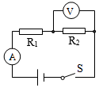
【分析】（1）根据Q＝I2Rt求出通电10s电阻丝R1产生的热量；
（2）根据串联电路电压特点和欧姆定律求出电源电压。
【解答】解：（1）通电10s电阻丝R1产生的热量：
Q＝I2R1t＝（0.4A）2×10Ω×10s＝16J。
（2）由I＝得，R1两端的电压：
U1＝IR1＝0.4A×10Ω＝4V，
根据串联电路电压规律可知，电源电压：
U＝U1+U2＝4V+2V＝6V。
答：（1）通电10s电阻丝R1产生的热量为16J；
（2）电源两端的电压为6V。
【点评】本题考查焦耳定律、欧姆定律和串联电路特点等知识，属于基础性题目，比较简单。
35．（4分）将物块竖直挂在弹簧测力计下，在空气中静止时弹簧测力计的示数F1＝2.6N．将物块的一部分浸在水中，静止时弹簧测力计的示数F2＝1.8N，如图所示，已知水的密度ρ＝1.0×103kg/m3，g取10N/kg。
求：（1）物块受到的浮力；
（2）物块浸在水中的体积。
【分析】（1）在空气中静止时弹簧测力计的示数即为物块的重力，又知道物块的一部分浸在水中时弹簧测力计的示数，根据F浮＝G﹣F′求出物块受到的浮力；
（2）根据阿基米德原理求出物块排开水的体积即为浸在水中的体积。
【解答】解：（1）由称重法可得物块受到的浮力：
F浮＝F1﹣F2＝2.6N﹣1.8N＝0.8N；
（2）由F浮＝ρ水gV排可得，物块浸在水中的体积：
V排＝
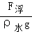
＝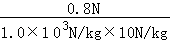
＝8×10﹣5m3。答：（1）物块受到的浮力为0.8N；
（2）物块浸在水中的体积为8×10﹣5m3。
【点评】本题考查了称重法求浮力公式和阿基米德原理的应用，是一道较为简单的计算题。